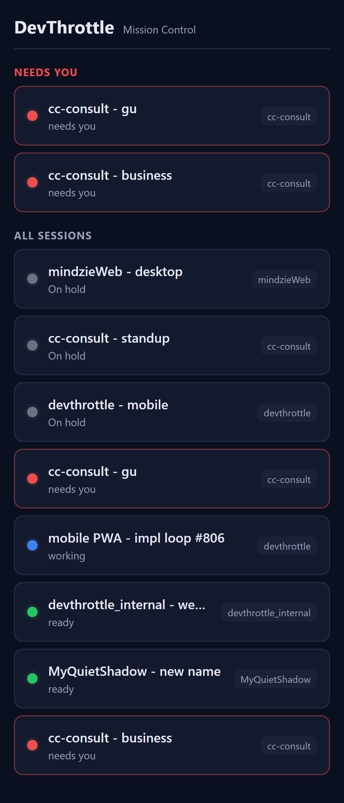
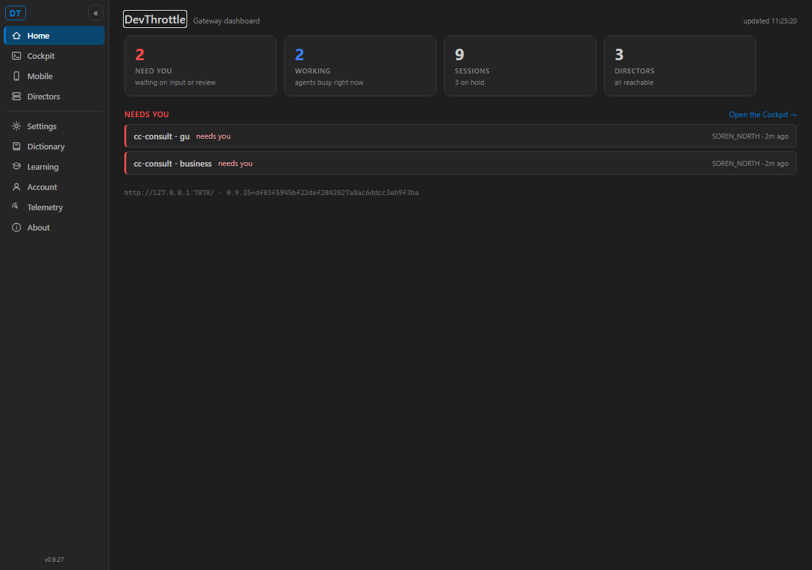
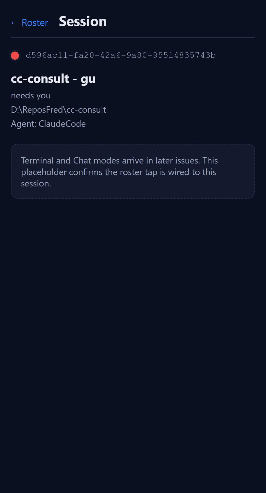

[Mobile] Foundation: React+TypeScript PWA served by the Gateway + Home roster + mobile redirect
Independent verification by the QA Agent. The Developer Agent's report and screenshots were treated as
context only; every result below was reproduced from scratch in the QA Agent's own checkout of the PR branch
(issue-806-mobile-foundation, head e08f39e6), with the Gateway built and run by the QA Agent.
Verification environment
Own git worktree of the PR branch; Release-built CcDirector.Gateway run on an isolated free port via a
QA harness, with CC_GATEWAY_NO_TAILSCALE=1 (no impact on the production Gateway on 7878 or
its Tailscale 443 front door).
Aggregated against an isolated copy of the live instances directory, so /sessions returned
the real fleet roster.
Phone-viewport screenshots captured with Playwright using the Pixel 5 device profile (393x851, mobile UA).
node v22.17.0, npm 10.9.2, .NET SDK 10.0.301.
AC1 - mobile/ is Vite+React+TypeScript+vite-plugin-pwa; npm ci && npm run build -> dist/
Expected
A Vite + React + TypeScript project with vite-plugin-pwa; a clean build yields a dist/ of static files.
Actual
package.json declares react/react-dom/react-router-dom + @vitejs/plugin-react + vite-plugin-pwa + typescript. npm ci (378 packages) then npm run build (tsc --noEmit && vite build) produced dist/ with index.html, hashed assets (index-*.js, index-*.css), manifest.webmanifest, and a generated service worker (sw.js, workbox-*.js) via "PWA v0.21.1 generateSW".
AC2 - routine dotnet build (Debug) does NOT invoke npm
Expected
The web-build MSBuild target is skipped outside publish/release config; a Debug build runs no npm.
Actual
The target BuildMobileApp is gated Condition="'$(RunMobileBuild)' == 'true'", and RunMobileBuild is true only for Release or explicit -p:BuildMobile=true. A clean Debug rebuild (dotnet build CcDirector.Gateway.csproj -c Debug -t:Rebuild) succeeded with 0 errors; the captured binary log contains 0 occurrences of "npm ci"/"npm run build"; and no wwwroot/m directory was produced.
Verdict
PASS
Build succeeded. 0 Warning(s) 0 Error(s)
binlog scan: "npm ci" -> 0 "npm run build" -> 0
wwwroot/m after Debug rebuild: (does not exist)
AC3 - a publish/release build runs the web build and populates wwwroot/m
Expected
A Release build runs the web build; wwwroot/m contains the built index.html + hashed assets.
Actual
A Release build logged "[BuildMobileApp] building the mobile PWA (Release)", invoked npm, and "[BuildMobileApp] staged 9 file(s) into ...\wwwroot\m". The directory then held index.html, manifest.webmanifest, registerSW.js, sw.js, workbox-*.js, icon-192/512.png, and assets/ with the content-hashed index-DNsaXDpr.js + index-cDIqSwKn.css.
AC4 - phone-viewport Home roster from live /sessions (needs-you group above the full list)
Expected
A phone-sized viewport at /m/ renders a "needs you" group (when any) above the full session list; each row shows name, status dot, and one context line; matches the live /sessions data.
Actual
The Pixel 5 viewport rendered a "NEEDS YOU" group (cc-consult - gu, cc-consult - business, both red/"needs you") above an "ALL SESSIONS" list (10 rows), each row showing a colored status dot, the session name, a context line (needs you / On hold / working / ready), and the repo leaf chip. The two needs-you sessions match exactly the desktop Cockpit "NEEDS YOU" panel for the same live fleet (see the side-by-side).
Verdict
PASS
Phone /m/ (Pixel 5)

Desktop Cockpit (same fleet)

AC5 - typed client + injected Bearer; renders with global Gateway auth on or off
Expected
The page loads /sessions through the generated typed client with the injected Bearer token, and renders whether global auth is on or off; /sessions returns 200 with the bearer.
Actual
With global auth ON: GET /m/ returned 200 text/html with window.__GW_TOKEN__ = "qa-token-806" injected (the __GATEWAY_TOKEN__ placeholder fully replaced, 0 remaining), i.e. the shell is exempt from the login gate. GET /sessions without a bearer returned 401; with the injected bearer returned 200 with the populated roster. The hashed asset bundle and /openapi/v1.json both returned 200. With auth OFF the roster rendered identically (the screenshots above). The 19 mobile xUnit tests (auth-on serving + redirect policy + openapi) all pass.
Verdict
PASS
# auth ON
GET /m/ -> 200 text/html, token injected (placeholder replaced)
GET /sessions (no bearer) -> 401
GET /sessions (Bearer injected) -> 200 [ {"sessionId":"23164fc8-...","name":"cc-consult - business", ...} ]
GET /m/assets/index-DNsaXDpr.js -> 200
GET /openapi/v1.json -> 200
AC6 - phone UA at root -> 302 /m/; desktop UA -> Cockpit (no redirect)
Expected
A phone browser-navigation to the Gateway root gets 302 to /m/; a desktop navigation gets the Cockpit (200), no redirect.
Actual
Tested in the production-representative config (auth off, as the live Gateway runs). A GET to / with an Android UA + Accept: text/html returned 302 Location: /m/. The same GET with a Windows desktop UA returned 200 served from the Cockpit (body title "DevThrottle - Cockpit", Blazor) - no redirect to /m/.
Verdict
PASS
PHONE GET / Accept:text/html UA:Android -> 302 Location: /m/
DESKTOP GET / Accept:text/html UA:Windows -> 200 <title>DevThrottle - Cockpit</title> (no /m/ redirect)
Note: curl -I (HEAD) against the desktop path returns 405 from the Cockpit proxy (HEAD not allowed there); a real browser issues GET, which returns the Cockpit 200 shown above. The phone HEAD still 302s to /m/ identically.
AC7 - installable; offline open shows the last-known roster (offline shell)
Expected
After one load, the app opens with no network and shows the last-known roster.
Actual
vite-plugin-pwa generates a service worker that precaches the app shell and (per vite.config.ts) NetworkFirst-caches /sessions. After one online load, the Playwright context was switched offline and the page reloaded: the React app shell loaded from the service worker and the full 10-row roster rendered from the cached /sessions (no error banner). A non-cached offline reload would have failed to load the JS bundle entirely, so a fully-rendered roster proves the offline shell + data cache work.
Verdict
PASS
Offline reload (network disabled)
AC8 - tapping a session row -> session-detail placeholder bound to that id
Expected
Tapping a row navigates to a session-detail placeholder route bound to that session id.
Actual
Tapping the "cc-consult - gu" row navigated to /m/session/d596ac11-fa20-42a6-9a80-95514835743b; the detail view showed that exact session id, the session name, its status/context, repo path, "Agent: ClaudeCode", and the placeholder note "Terminal and Chat modes arrive in later issues. This placeholder confirms the roster tap is wired to this session."
Verdict
PASS
Session-detail placeholder

Regression / method checks
Gateway test suite: 989 passed, 1 failed (DictationEndpointTests.DictatePage_is_served), of 990.
The single failure is pre-existing on main and unrelated to this issue: the rebrand commit
0e6febed (on both main and this PR branch) renamed the dictate.html title from "CC Director" to
the DevThrottle brand but did not update that test's assertion Assert.Contains("CC Director - Dictation", body).
This PR touches no dictation file (verified via git diff --name-only origin/main...HEAD). Not a defect of #806; a separate rebrand cleanup.
New tests added by the PR cover the new behavior: 7 redirect-policy + live-middleware tests, 3 auth-serving tests, 1 openapi test (all pass).
Method/security: the AuthMiddleware /m exemption is justified - the shell carries only the injected per-machine
token (not a secret) and the data endpoint /sessions stays Bearer-gated; the token is never logged. Architecture
documented under docs/architecture/mobile/. No blocking security rule broken.
Debug and Release builds of the Gateway both succeed with 0 errors.
Verdict
VERIFIED - all 8 acceptance criteria met (AC1-AC8 PASS). The one failing test is pre-existing
on main from the rebrand and unrelated to this issue. Recommended: PASS / merge.